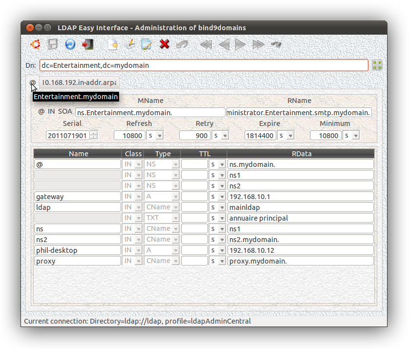
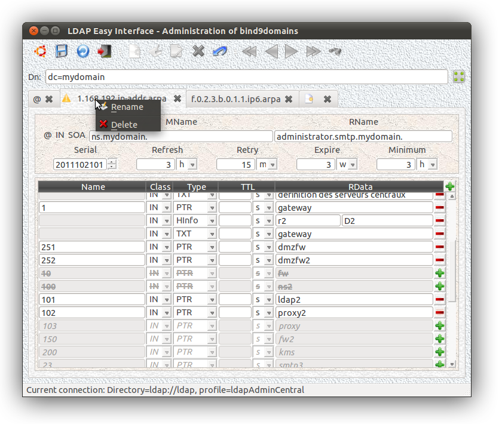

Masque de saisie des paramètres du daemon "bind9" :

Ce plugin est aussi automatiquement appelé (lorsqu'il est accessible - "${PATH}") à partir de l'interface "
domainFrontend" qui regroupe ainsi différentes gestions du domaine "
dc" ...
Ici se trouve un exemple de définitions de zones DNS (format "
LDIFF") de l'annuaire LDAP de paramétrage de notre intranet ...
Astuce :
après modification erronée (ce qui peut arriver lors de l'utilisation
de la molette de la souris pour scroller ;-), le double-clic sur "-" permet de restaurer les valeurs d'origine du (ou des) enregistrement(s) éventuellement détérioré(s) ...

Les définitions grisées (non barrées) correspondent aux RRs définies
dans la zone DNS (directe) mais non encore présentes dans la zone "
arpa" correspondante (ici: "
1.168.192.IN-ARPA")...
Elle sont donc suggérées à la validation et peuvent être intégrées à la
définition de la zone inverse d'un simple clic sur l'icon "
+".
Pilote de mise à jour du fichier "named.conf" :
Voici l'interface de paramétrage de "
named.conf":
doNamedConf. Elle partage ses sources avec
getHostName. Elle peut donc être utilisée ainsi :
getHostName --namedConf
ou bien :
ln -s /usr/local/bin/getHostName /usr/local/bin/doNamedConf ; doNamedConf
Ce programme permet la génération automatique (déclenchée soit par "
cron",
soit au niveau des procédures de démarrage du système destinataire) du
fichier de configuration
(ex.: "
/etc/named.conf").
Exemple de shell-script à installer (cron ?) sur le serveur DNS primaire (bind9 patché LDAP) de l'intranet à administrer :
...
# previous setting...
...
NAMEDCONFFILE="/etc/named.conf"
TMP=/tmp/.doNamedConf.$$
<$NAMEDCONFFILE awk '{if ($0 ~ /@\(#)LdapEasyInterface - bind9domain -/) bool=1; if (!bool) print $0}' >$TMP
if [ -s $NAMEDCONFFILE ] ; then
2>/dev/null ${BIN}/getHostName --namedConf >>$TMP
<$NAMEDCONFFILE awk '{if ($0 ~ /@\(#)LdapEasyInterface - End -/) bool=1; if (!bool) print $0}' >>$TMP
fi
cat <$TMP >$NAMEDCONFFILE
rm -f $TMP
...
# next setting...
...
Insérer préalablement les deux lignes suivantes dans le fichier "/etc/named.conf" (là où souhaité) :
...
# @(#)LdapEasyInterface - bind9domain - Global Settings:
# @(#)LdapEasyInterface - End -
...
Exemple de déclaration de zone dans "named.conf" :
zone "domain" IN {
type master;
database "ldap
ldap://ldap/ou=bind9domain,dc=domain????!bindname=cn=nssldap%2cou=applications%2cdc=mydomain,!x-bindpw=mydomain
172800";
allow-update { none; };
};
zone "1.168.192.in-addr.arpa" IN {
type master;
database "ldap
ldap://ldap/ou=bind9domain,dc=mydomain????!bindname=cn=nssldap%2cou=applications%2cdc=mydomain,!x-bindpw=mydomain
172800";
allow-update { none; };
};
Exemple de mise en oeuvre de l'interfaçage LDAP du service DNS "BIND9" :
http://howto-linux.tbugier.fr.eu.org/wiki/index.php/DNS-LDAP_-_param%C3%A9trer_le_serveur_Bind9_avec_LDAP
Astuce :
Le DNS patché LDAP ne sert qu'à transmettre les définitions de zones à
l'ensemble des serveurs secondaires de l'intranet qui eux répondront aux
requêtes des utilisateurs (Bind9 patché perd en effet des
fonctionnalités importantes d'optimisation ...).
Les sources de la dernière version 1.2 du (
20111028) sont
ici...
A utiliser avec les dernières mises à jour de "
ldapcppei", de "
connectForm" et de "
frontend" ...
Après compilation du plugin :
me@home:~$ mv libbind9domain.so /usr/local/bin/
me@home:~$ frontend --plugin libbind9domain.so
ou :
me@home:~$ mv libbind9domain.so /usr/local/bin/
me@home:~$ ln [-s] /usr/local/bin/frontend /usr/local/bin/bind9DomainFrontend
me@home:~$ bind9DomainFrontend
ou encore :
me@home:~$ mv libbind9domain.so /usr/local/bin/
me@home:~$ domainFrontend
Testé sur une base de
11380 entrées, dont
136 domaines ("
dc"),
160 zones DNS ("
zoneName") et
2954 définitions ("
relativeDomainName").
Temps moyens de rafraichissement d'affichage sur un domaine de
10 zones et
596 définitions (en version:
Ubuntu 11.10 amd64 Unity - Intel Core CPU E8400 @ 3.00GHz * 2 - RAM 4Go):
-
10 secondes sans option "
Customized display",
-
15 secondes avec option "
Customized display"...
Temps d'écriture LDAP de
50% des définitions modifiées : 20s - 10s (de rafraichissement d'affichage) ~=
10 secondes.